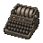
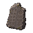
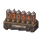
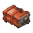

普通红 7 · 良好红 4 · 稀有红 6。放大图旁是 48 像素实际尺寸。原稿 1254px，入库时按 alpha 裁主体、Lanczos 缩到 40px、二值化透明边；点击大图看原稿。
life50 · 普通红 · 生活用品
life50
¥450,000
elec16 · 普通红 · 电子产品
elec16
¥600,000
med16 · 普通红 · 医疗物资
med16
¥550,000

mil16 · 普通红 · 军事物资
mil16
¥500,000
intel14 · 普通红 · 情报资料
intel14
¥480,000
occ16 · 普通红 · 神秘学物品
occ16
¥650,000
odd17 · 普通红 · 异常遗物
odd17
ind16 · 良好红 · 工业器材
ind16
¥1,200,000
intel15 · 良好红 · 情报资料
intel15
¥1,500,000

occ17 · 良好红 · 神秘学物品
occ17
¥1,400,000
odd18 · 良好红 · 异常遗物
odd18
¥1,700,000
life51 · 稀有红 · 生活用品
life51
¥3,800,000

elec17 · 稀有红 · 电子产品
elec17
¥4,600,000
ind17 · 稀有红 · 工业器材
ind17
¥4,200,000
med17 · 稀有红 · 医疗物资
med17
¥4,800,000
antiq10 · 稀有红 · 文物藏品
antiq10
¥3,600,000

mil17 · 稀有红 · 军事物资
mil17